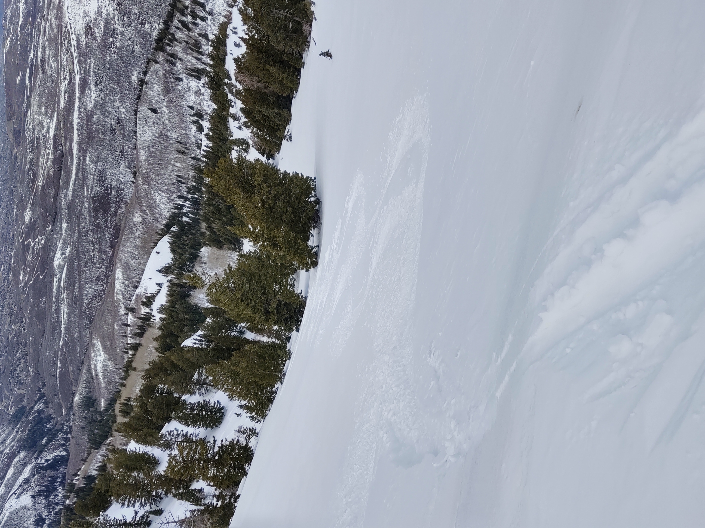
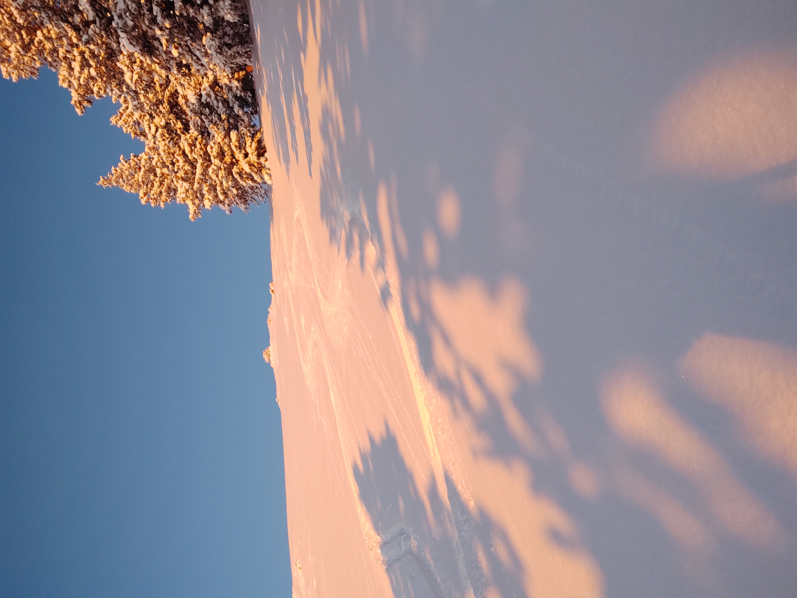

Bountiful Ridge is the south side of Mueller Park Canyon (or Mill Canyon on some maps), or the north side of City Creek Canyon. Though an approach looks like it would be shorter from Mueller Park, the fastest way there is through North Canyon. The North Canyon trail works, but there are some obvious short-cuts you can take by leaving it and then rejoining it later on. (One of the short-cuts even has a name and has been, shall we say, pruned a bit, but I'm sworn to secrecy so I'll say no more.)
The approach is long and you only really feel like it starts once you reach Rudy's Flat. From there you can gain the ridge in many different ways. Some seem to expose you to avalanche danger a bit longer or shorter than others, and there isn't too much choice in varying aspect to get up there. Once up there, though, you have many aspects to choose from.

I went up there one day when the avalanche danger was high, thinking I could out-smart conditions with careful terrain selection. I was wrong. I didn't trigger an avalanche, but the shooting cracks and the whumping noises were absolutely horrifying. I should have turned back sooner than I did, but the further up the ridge I went, the more committed I felt, because skiing back down was going to test the slope even worse than skinning up. It was not a fun feeling at all, wondering if the slope was going to pull out on you at any moment.
Prior to this foolish ascent, I had stepped off a skin track going to the north side of it. The moment I did, I heard a big collapse. That was my first red flag, and should have sent me home. Anyhow, and interestingly, when I got back to this same skin track, and stepped onto it again, then off of it to the south. Whump! Another collapse! That's two collpase, one on each side of the skin track! I recall seeing shooting cracks in various places too. Fool. Mother nature was screaming at me that day, and I just wasn't listening.
So yeah, I had foolishly ascended one of the peaks on the ridge called Rectangle Peak. At that point, I wondered how in the hell I was going to get off of it without dying. Fortunately, after looking around, I noticed that there had been some strong width coming out of the south which cross-loaded some of the bowls, but somewhat stripped the windwerd side of some sub-ridges. I was able to ski the stripped parts, trying to avoid rocks, to get down, and avoided the wind-loaded portions.
My favorite part of Bountiful Ridge is called Mark's Ghost, Owen's late brother Mark being the name-sake of this area. I'm not sure if he wants me to use the names he's come up with for Bountiful Ridge, but the name has kind of stuck; I'm not sure what else to call it now.
I think I've skied Bountiful Ridge more than any other area. It holds a lot of nostalgia for me at this point.
Some notable areas on B-Ridge include the Red-Rose area, Crescent Bowl, Black's Peak (not to be confused with Black Mountain, I suppose), Tele Hill, and Face Plant Hill. Maybe I'll post a map of the area if I can find one.